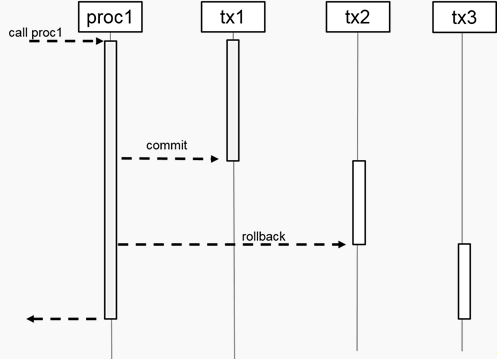
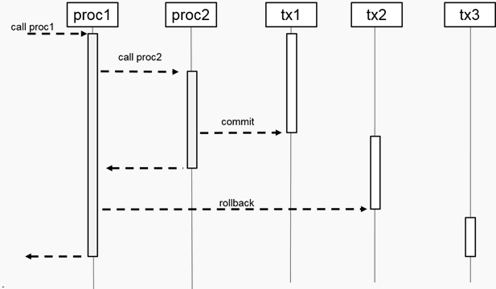

The COMMIT and ROLLBACK commands are supported natively in SQLScript.
The COMMIT command commits the current transaction and all changes before the COMMIT command is written to persistence.
The ROLLBACK command rolls back the current transaction and undoes all changes since the last COMMIT.
Example 1:
CREATE PROCEDURE PROC1() AS
BEGIN
UPDATE B_TAB SET V = 3 WHERE ID = 1;
COMMIT;
UPDATE B_TAB SET V = 4 WHERE ID = 1;
ROLLBACK;
END;In this example, the B_TAB table has one row before the PROC1 procedure is executed:
|
V |
ID |
|
0 |
1 |
After you execute the PROC1 procedure, the B_TAB table is updated as follows:
|
V |
ID |
|
3 |
1 |
This means only the first update in the procedure affected the B_TAB table. The second update does not affect the B_TAB table because it was rolled back.
The following graphic provides more detail about the transactional behavior. With the first COMMIT command, transaction tx1 is committed and the update on the B_TAB table is written to persistence. As a result of the COMMIT, a new transaction starts, tx2.
By triggering ROLLBACK, all changes done in transaction tx2 are reverted. In Example 1, the second update is reverted. Additionally after the rollback is performed, a new transaction starts, tx3.
The transaction boundary is not tied to the procedure block. This means that if a nested procedure contains a COMMIT/ROLLBACK, then all statements of the top-level procedure are affected.
Example 2:
CREATE PROCEDURE PROC2() AS
BEGIN
UPDATE B_TAB SET V = 3 WHERE ID = 1;
COMMIT;
END;
CREATE PROCEDURE PROC1() AS
BEGIN
UPDATE A_TAB SET V = 2 WHERE ID = 1;
CALL PROC2();
UPDATE A_TAB SET V = 3 WHERE ID = 1;
ROLLBACK;
END;In Example 2, the PROC1 procedure calls the PROC2procedure. The COMMIT in PROC2 commits all changes done in the tx1 transaction (see the following graphic). This includes the first update statement in the PROC1 procedure as well as the update statement in the PROC2 procedure. With COMMIT a new transaction starts implicitly, tx2.
Therefore the ROLLBACK command in PROC1 only affects the previous update statement; all other updates were committed with the tx1 transaction.
If you used DSQL in the past to execute these commands (for example, EXEC ‘COMMIT’, EXEC ’ROLLBACK’), SAP recommends that you replace all occurrences with the native commands COMMIT/ROLLBACK because they are more secure.
The COMMIT/ROLLBACK commands are not supported in Scalar UDF or in Table UDF.